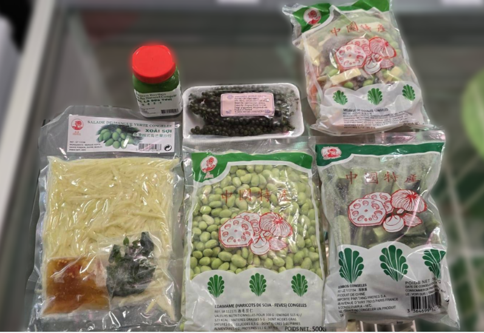

Rayon Congelé
Les produits du rayon congelé les plus achetés
Réunion – De nombreux produits de la Réunion !
Gyoza – Des gyozas aux différentes farces, pour tous les plaisirs !
Bouchons – De poulet, de porc ou crevettes, tout y est pour un bon repas !
Halal – De nombreux produits halal sont disponibles en congelés !
Poulet – Retrouvez des poulets entiers, des pattes ou encore des cuisses pour toutes vos envies de poulet !
Crevettes – Une envie de crevettes ? Vous trouverez ici des crevettes de toutes les tailles, décortiquées et non décortiquées.
Poissons – Ici se trouve du poissons à ne plus savoir quoi en faire !
Fritures – Une envie de croustillant ? Des oignons rings, des corndog et bien plus à découvrir.

Asiatiques -Venez déguster de délicieux nems, samoussas et raviolis !
Feuilles - Retrouvez des feuilles pour confectionner des nems et bien d'autres plats !
Canard laqué, brochette boeuf-fromage, naan au fromage et poulet kaarage.

Piments végétariens, combava, piments antillais et feuilles de citron.
Salade d'algue, soupe tom yum et tranche fine de boeuf ou mouton pour grillade Sukiyaki.
Mélange légumes, salade de mangue verte, damane et gombos.
Concombres amères, attieke et feuilles de manioc (Saka saka).